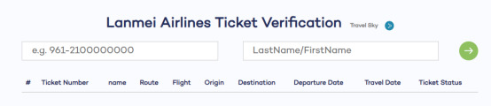
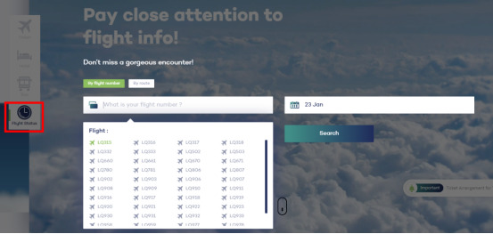
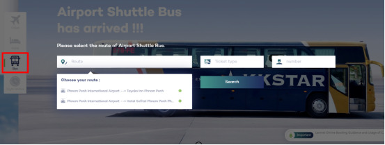

1. Q: Why can’t I verify my ticket? The ticket verification page always showed the error message.
-
A: You need to fill in your ticket number and your name correctly according to the example format on the verification page.
For example: 961-2100000000，LastName/FirstName (Fill in your name as the format shows on your itinerary)
-

2. Q: How can I book infant ticket?
-
A: Our website currently does not support the purchase of infant ticket directly. If you need to book it, we will help you. Please send an email to our official website after you get the adult ticket: lm-ec@lanmeiairlines.com
3. Q: How can I apply for wheelchair service?
4. Q: How many free checked baggage allowances do I have for my ticket?
-
A: Each passenger is entitled to 15kg free allowance of checked baggage, except Bangkok route, Guangzhou route, Hong Kong route, Phnom Penh=Siem Reap, of which the amount is 25kg.
5. Q: My baggage is overweight. How can I purchase excess baggage?
-
A: If your ticket is booked from our official website, you can pre-book excess baggage on our official website, remember to buy it 12 hours before the flight departure.
6. Q: The destination of the ticket I booked is wrong. How can I change it?
-
A: We are sorry to tell you that the origin and destination are not allowed to be modified after the ticket booked successfully. Please confirm the relevant information before booking.
7. Q: I'd like to select a seat in advance. How can I check in online?
-
A: Our website currently does not support online check-in and seat selecting. You will get the ticket and select seats when you check in at the airport.
8. Q: I booked a ticket on your official website and I have paid successfully , but why didn't I receive any confirmation?
-
A: Please send a screenshot of your payment to our email address and we will send you the itinerary after confirmation. (Tips: In order to receive the itinerary successfully, please make sure that you fill in the contact email address correctly when booking the ticket.)
9. Q: How can I check out if there any changes of my flight ?
-
A: Click ‘Flight Status’ on our official website homepage, and select your scheduled flight number and travel date, you can easily check real-time flight information.
- 
10. Q: How can I book the airport bus?
-
A: Click ‘Bus’ on our official website homepage, and you can choose the airport bus you need.
- 
11. Q: My booking of the ticket failed because my name is too long. What should I do if I can't receive the itinerary?
-
A: If your name exceeds 28 characters, you may fail to receive the ticket after you have done the booking. In this case, please send an email to our official website: lm-ec@lanmeiairlines.com, we will issue the ticket for you.
12. Q: Can pets board with me?
-
A: According to the aircraft conditions, animal carriage is not permitted on Lanmei Airlines.
13. Q: Can a child/adolescent take a flight alone?
-
A: 1. Children aged below 12 shall not be accepted for carriage unless they are accompanied by a person of at least 18 years old.
2.Passengers aged between 12 and 16 shall be accepted for carriage only if a parent or a legal guardian signs a Limited Liability Statement upon check-in.
14. Q: Are there any special rules for pregnant women to take the flight?
-
A: 1.Pregnancy up to 27 weeks (inclusive): Guest must sign Lanmei Airlines Limited Liability Statement at the time of check-in to absolve Lanmei Airlines against any liabilities arising there from.
2.Pregnancy between 28 weeks and 34 weeks (inclusive): Guest must: * Submit an approved doctor's medical certificate.* Submit a doctor's medical certificate confirming the number of weeks of pregnancy and the certificate shall be dated not more than thirty (30) days from either the scheduled outbound or the scheduled inbound flight departure date as the case may be.* Sign Lanmei Airlines Limited Liability Statement at the time of check-in to absolve Lanmei Airlines against any liabilities arising there from.
3.Pregnancy 35 weeks and above: carriage not permitted on Lanmei Airlines.
15. Q：My schedule has changed. Can I apply for a ticket rescheduling or refund?
-
A: Please click the link below to check the change and refund policy for your scheduled flight. If you need to reschedule or apply for refund, you can send an email to our official website: lm-ec@lanmeiairlines.com, we will issue for you.
Change and refund rules: http://b2c.lanmeiairlines.com/lqWeb/lqweb/Lanmei_project/tpls/EN/LMFareRule.html
16. Q: Which payment method do you accept on the official website?
-
A: Our website has 3 payment methods, PAYPAL, ALIPAYOVERSEA and CHINAPAYUPOP. You can choose the payment platform PAYPAL to pay by Credit card, such as Master card or Visa card.
17. Q: How to pre-book in-flight meals ?
-
A: Pre-purchasing service of in-flight meals is only opened to passengers who book tickets on the official website of Lanmei Airlines. Please purchase in-flight meals 24 hours before flight departure.
18. Q: How can I become a member of Lanmei Airlines ? Is there any special rights for members?
-
A: Thank you very much for choosing Lanmei Airlines! We have launched the membership program: “Lanmei Club”. You will become our member once you register on our official website and you will have more exclusive rights in the future! Click the follow link to know more details about our Membership Program: https://lanmeiairlines.com/lanmeiairlines2.0/default/menus/EN/community/LMMemberManual.html